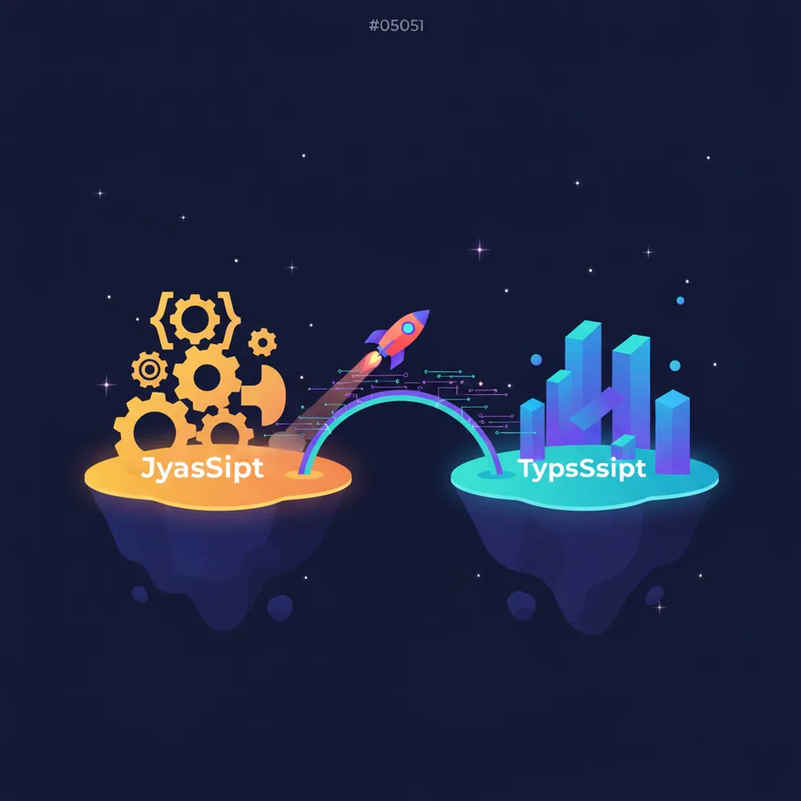

หน้าหลัก › โมดูล 6: 🏗️ Architecture & Refactoring
บทเรียน 6.3
Migration: JS→TS, Class→Hooks
งาน migration เช่น JavaScript→TypeScript หรือ class component→hooks เป็นงานน่าเบื่อที่ Claude ทำแทนได้ดีและเร็ว
🎯 เมื่อเรียนจบบทนี้ คุณจะ…
- อธิบายงาน migration ได้
- ใช้ Claude ช่วยเปลี่ยนโค้ดได้
- วางแผนการเปลี่ยนโค้ดเป็นส่วนๆ ได้

ตัวอย่าง migration ยอดนิยม
- JS → TS (เพิ่ม type ทีละไฟล์)
- React class → function + hooks
- REST → GraphQL
- library เก่า → ใหม่ (เช่น moment → date-fns)
ทำเป็นเฟส
migrate ทีละส่วน ทดสอบ แล้วค่อยไปต่อ — อย่าทำทั้งหมดทีเดียว
💬 ลองใช้ Prompt นี้กับ Claude
ช่วย migrate ไฟล์นี้จาก [เดิม] เป็น [ใหม่] รักษา behavior เดิมไว้ทั้งหมด ทำให้ดูเป็นตัวอย่างก่อน 1 ไฟล์ แล้วฉันจะให้ทำต่อ
💡
เคล็ดลับ: ให้ Claude ทำ 1 ไฟล์เป็นตัวอย่างก่อน ดูว่าแนวทางถูกใจ แล้วค่อยบอกให้ทำที่เหลือ
📌 สรุปบทนี้
- เหมาะกับ migration น่าเบื่อ
- ทำเป็นเฟส ทดสอบระหว่างทาง
- ทำตัวอย่าง 1 ไฟล์ก่อน
🧠 แบบทดสอบท้ายบท
ลองตอบดู แล้วระบบจะเฉลยให้ทันที
ข้อ 1.Claude เก่งเรื่องอะไรในการช่วยเปลี่ยนโค้ด (migration)?
เฉลย: Claude ช่วยงานที่ซ้ำๆ เช่น การเปลี่ยนรูปแบบโค้ดได้ดีและเร็ว.
ข้อ 2.ถ้าจะเปลี่ยนโค้ด (migration) ควรทำแบบไหนดีที่สุด?
เฉลย: การเปลี่ยนทีละส่วนและทดสอบไปเรื่อยๆ จะช่วยให้งานไม่ผิดพลาดและทำได้ง่ายขึ้น.